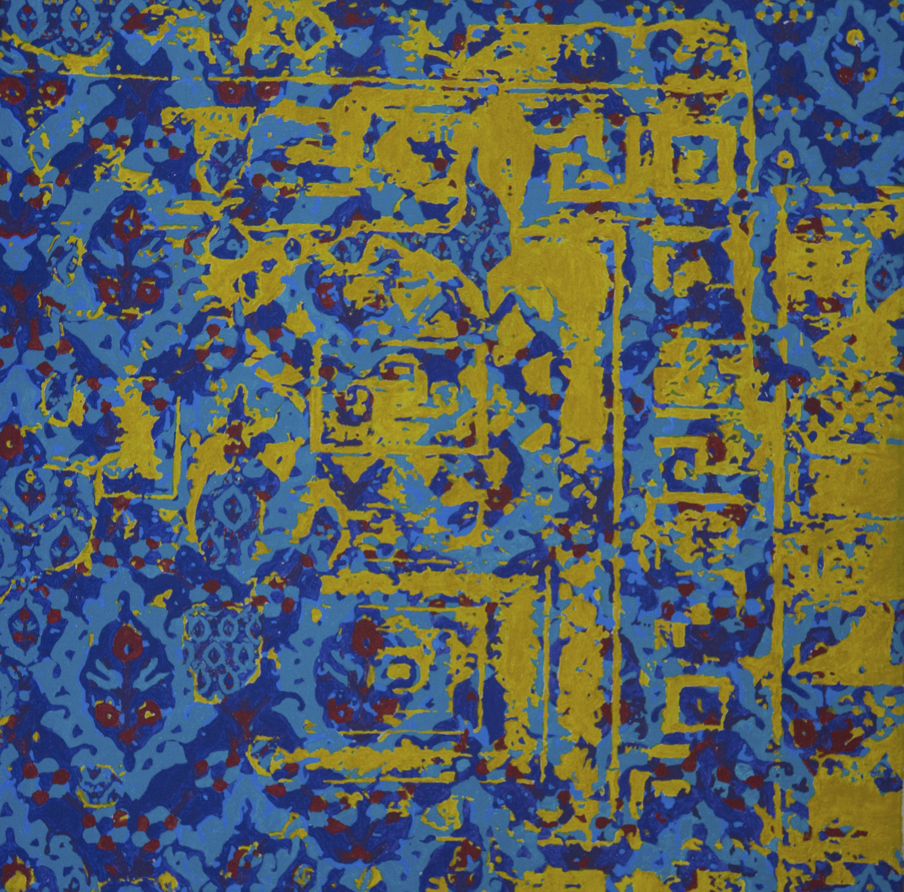

Disintegrating Fleur
2015
Acrylic on Canvas
30 in x 30 in


This is inspired by Islamic Textiles. It is a combination of faded textiles and one particular pattern in several sizes. To show the disintigration of textiles over time. It is a beautiful concept.